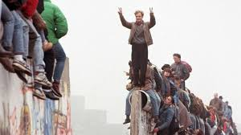
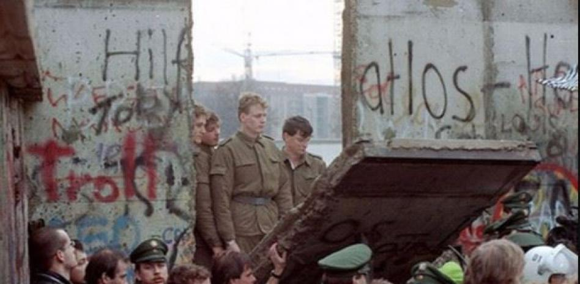
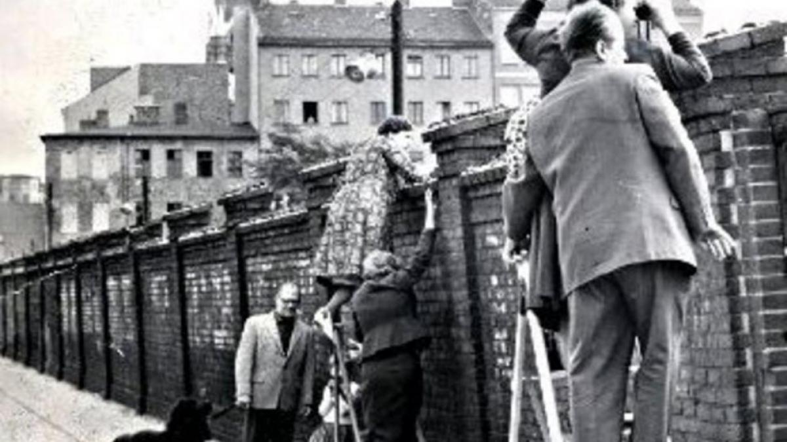
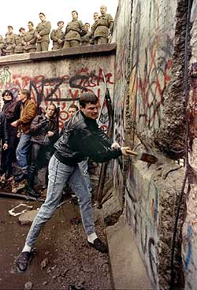
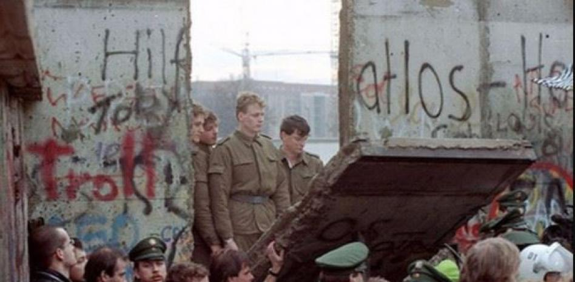
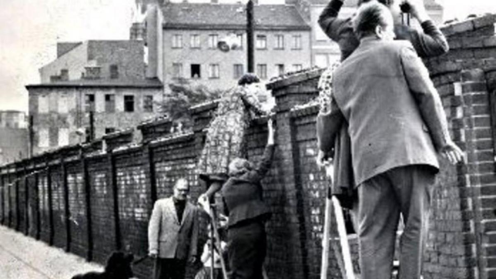
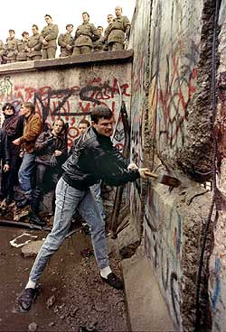
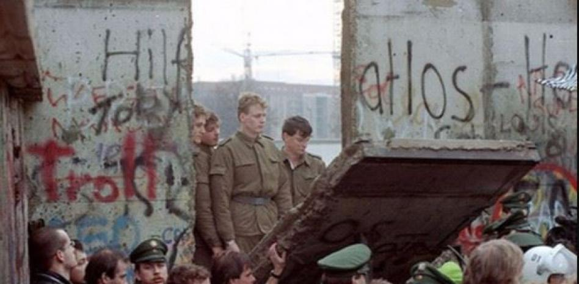
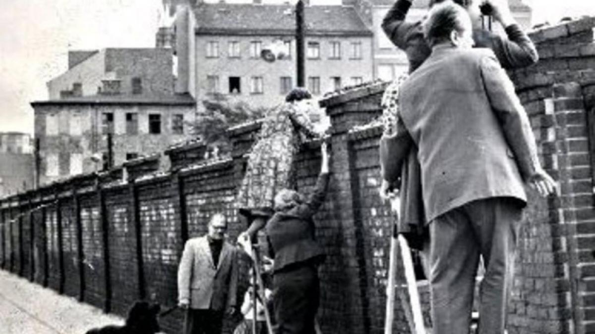
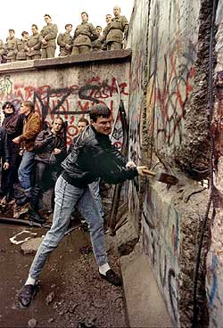

La Caída del Muro de Berlín , ocurrida el 9 de noviembre de 1989 , fue un evento histórico trascendental que simbolizó el fin de la Guerra Fría, la desintegración del bloque comunista en Europa del Este y el primer paso hacia la reunificación de Alemania. Después de casi tres décadas dividiendo la ciudad y separando familias, la apertura de sus fronteras se produjo de manera pacífica y espontánea.
El Muro de Berlín: Un Símbolo de la Guerra Fría
El Muro de Berlín fue construido el 13 de agosto de 1961 por la República Democrática Alemana (RDA) para detener el masivo éxodo de su población hacia Berlín Occidental y la República Federal Alemana (RFA). Berlín, aunque ubicada en la zona de ocupación soviética, estaba dividida en cuatro sectores (soviético, estadounidense, británico y francés) después de la Segunda Guerra Mundial. La prosperidad económica y las libertades del lado occidental atraían a miles de alemanes del este, lo que representaba una "fuga de cerebros" y mano de obra para el régimen comunista.
El Muro, una barrera de hormigón, alambre de púas, torres de vigilancia, trampas antitanque y una "franja de la muerte" vigilada por guardias armados, se convirtió en el símbolo más palpable de la Cortina de Hierro que dividía Europa en dos bloques ideológicos: el capitalista, liderado por Estados Unidos, y el comunista, liderado por la Unión Soviética.
Causas de su Caída
La caída del Muro no fue un hecho aislado, sino la culminación de una serie de factores y cambios que se venían gestando en la Unión Soviética y en el bloque del Este:
Reformas de Mijaíl Gorbachov: El líder soviético Mijaíl Gorbachov implementó políticas de Glasnost (apertura, transparencia) y Perestroika (reestructuración económica). Estas reformas, destinadas a revitalizar la estancada economía soviética y mejorar las condiciones de vida, debilitaron el control central de Moscú sobre los países satélites. Gorbachov también adoptó la "Doctrina Sinatra" (cada país a su manera), que implicaba no intervenir militarmente en las reformas de los países del bloque.
Crisis económica en el Bloque del Este: La economía de la RDA y de otros países comunistas estaba en una profunda crisis. La falta de bienes de consumo, la escasez y la represión política generaban un creciente descontento popular.
Movimientos de protesta y disidencia: A lo largo de 1989, se produjeron masivas manifestaciones pacíficas en ciudades de la RDA como Leipzig y Berlín, con lemas como "Wir sind das Volk!" (¡Nosotros somos el pueblo!) o "¡Sin violencia!". La gente exigía reformas democráticas y libertad de viaje.
Apertura de fronteras en otros países del Bloque: La apertura de la frontera entre Hungría y Austria en mayo de 1989 permitió a miles de alemanes orientales huir hacia Occidente. Checoslovaquia también experimentó un aumento de refugiados de la RDA en sus embajadas de Alemania Occidental.
Presión internacional: Líderes occidentales como el presidente de Estados Unidos, Ronald Reagan , habían presionado públicamente a la Unión Soviética y a la RDA para que derribaran el Muro, como su famoso discurso de 1987: "¡Señor Gorbachov, derribe este Muro!".
Los Sucesos del 9 de Noviembre de 1989
La noche del 9 de noviembre fue el resultado de un error de comunicación y de una presión popular incontenible. En una conferencia de prensa televisada, el portavoz del Partido Comunista de la RDA, Günter Schabowski , anunció por error que las nuevas regulaciones de viaje (que flexibilizaban, pero no eliminaban, las restricciones) entrarían en vigor "inmediatamente, sin demora".
Miles de berlineses orientales, al escuchar la noticia, se dirigieron inmediatamente a los puestos de control del Muro. Los guardias fronterizos, sin órdenes claras y abrumados por la multitud, finalmente abrieron las barreras. La gente de ambos lados del Muro se unió en una celebración espontánea y eufórica, trepando el Muro, abrazándose y comenzando a derribarlo con martillos y picos.
Consecuencias y Legado
La Caída del Muro de Berlín tuvo consecuencias inmediatas y a largo plazo que transformaron el mundo:
Fin de la Guerra Fría: Se considera el evento que marcó el fin simbólico de la Guerra Fría y el colapso del bloque soviético.
Reunificación Alemana: Menos de un año después, el 3 de octubre de 1990 , Alemania se reunificó oficialmente, integrando la RDA a la República Federal de Alemania.
Transición democrática en Europa del Este: La caída del Muro aceleró la desintegración de los regímenes comunistas en otros países de Europa del Este (Revoluciones de 1989).
Disolución de la Unión Soviética: La crisis interna y la pérdida de control sobre los países satélites condujeron a la disolución de la URSS en 1991.
Un nuevo orden mundial: Se abrió una era de unipolaridad con Estados Unidos como la única superpotencia, aunque también surgieron nuevos desafíos y reajustes geopolíticos.
Libertad y Derechos Humanos: La caída del Muro representó una victoria de la libertad sobre la opresión y la división, permitiendo el reencuentro de miles de familias separadas.
Hoy en día, quedan pocos vestigios del Muro, pero su legado perdura como un recordatorio de la resiliencia humana y la importancia de la libertad.
Galería de Imágenes Históricas




Trivia Histórica sobre la Caída del Muro de Berlín
 




